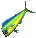
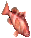
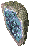
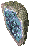
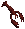

fishing pole[釣り竿]fishing pole[釣り竿]
fishing pole[釣り竿]fishing pole[釣り竿] lava fishing pole [溶岩用の釣り竿] ： 溶岩地帯に釣り糸をたらすことができます。100回使うと普通の釣り竿に戻ります。
lava fishing pole [溶岩用の釣り竿] ： 溶岩地帯に釣り糸をたらすことができます。100回使うと普通の釣り竿に戻ります。 〜 bait [〜のエサ] ： 釣り竿や罠に使うことで、レアな魚介類を釣り上げやすくします。
〜 bait [〜のエサ] ： 釣り竿や罠に使うことで、レアな魚介類を釣り上げやすくします。 〜 hook [〜のつり針] ： 釣り竿に使うことで、特殊な効果を付与します。Publish71より、追加される予定です。
〜 hook [〜のつり針] ： 釣り竿に使うことで、特殊な効果を付与します。Publish71より、追加される予定です。釣り竿による釣り
ロブスター用の罠による採取
エサの使い方つり針の使い方つり針の効果

uncommon shiner [変わり銀魚] |
brook trout [カワマス] |
smallmouse bass [コクチバス] |
walleye [ウォールアイ] |
|  green catfish [ミドリナマズ] |
pike [パイク] |
kokanee salmon [コカニーマス] |
yellow perch [イエローパーチ] |
rainbow trout [ニジマス] |
redbelly breamt [レッドベリーブリーム] |
pumpkinseed sunfish [パンプキンシード] |
 bluegill sunfish [ブルーギル] |
black seabass [ブラックシーバス] |
haddock [ハドック] |
bluefish [ブルーフィッシュ] |
red snook [レッドスヌーク] |
mahi-mahi [マヒマヒ] |
captain snook [キャプテンスヌーク] |
amberjack [アンバージャック] |
yellowfin tuna [キハダマグロ] |
bonefish [ボーンフィッシュ] |
tarpon [ターポン] |
cobia [コビア] |
bonito [カツオ] |
shad [シャド] |
red drum [レッドドラム] |
gray snapper [ネズミフエダイ] |
blue grouper [ブルーグルーパー] |
red grouper [レッドグルーパー] |
cape cod [ミサキタラ] |
lurker fish [マチブセウオ] |
orc bass [オークバス] |
snaggletooth bass [ラングイバス] |
drake fish [ドレイクフィッシュ] |
grim cisco [グリムシスコ] |
tormented pike [アワレナパイク] |
crag snapper [イワフエダイ] |
demon trout [デーモンマス] |
cutthroat trout [カットスロート] |
infernal tuna [ジゴクマグロ] |
darkfish [ダークフィッシュ] |
dungeon chub [ダンジョンチャブ] |
 crab [カニ] |
applecrab [アップルクラブ] |
blue crab [ブルークラブ] |
dungeness crab [ダンジョンクラブ] |
king crab [キングクラブ] |
rock crab [ロッククラブ] |
snow crab [スノークラブ] |
|
 lobster [ロブスター] |
crusty lobster [クラストロブスター] |
fred lobster [フレッドロブスター] |
hummer lobster [ハンマーロブスター] |
rock lobster [ロックロブスター] |
shovel-nose lobster [シャベルロブスター] |
spiny lobster [スパインロブスター] |


 lava rock [溶岩石]
lava rock [溶岩石] geode shard [晶洞石のかけら]
geode shard [晶洞石のかけら]  geode [晶洞石]
 geode [晶洞石]


 white pearl [白真珠]
white pearl [白真珠]![delicate scales
[精密天秤]](delicate_scales.gif) delicate scales [精密天秤]
delicate scales [精密天秤]切り身の数量 ＝ [（魚の重量）/ 5 ]× 2 − 4 （[ ]内は端数切捨、カニ・ロブスター類は重量に関わらず1つのみ）
| 画像 | 名称 | 採取地域 | 水域 | スキル | エサ |
| great barracuda [グレートバラクーダ] |
Felucca | 深海 | 81.0 |  |
|
| yellow barracuda [イエローバラクーダ] |
Trammel | 深海 | 81.0 | ||
 |
autumn dragonfish [秋竜魚] |
Ilshenar | 浅瀬 | 81.0 | |
| holy mackerel [ギョギョ] |
Malas | 浅瀬 | 81.0 |  |
|
| giant koi [コイ] |
Tokuno | 深海 | 81.0 |  |
|
| fairy salmon [フェアリーサーモン] |
Ter Mur | 浅瀬 深海 |
81.0 |  |
|
| stone crab [ストーンクラブ] |
Lostland | 深海 | 81.0 |  |
|
| fire fish [ファイアフィッシュ] |
Shame | 洞窟 | 81.0 | ||
| summer dragonfish [夏竜魚] |
Destard | 洞窟 | 100 |  |
|
| reaper fish [リーパーフィッシュ] |
Doom | 洞窟 | 81.0 |  |
|
 |
bull fish [ブルフィッシュ] |
Labyrinth | 洞窟 | 81.0 |  |
| unicorn fish [ユニコーンフィッシュ] |
Twisted wield | 洞窟 | 81.0 |  |
|
| crystal fish [クリスタルフィッシュ] |
Prism of light | 洞窟 | 100 |  |
|
| lava fish [ラヴァフィッシュ] |
Abyss溶岩 | 洞窟 | 105 | ||
| spider crab [スパイダークラブ] |
Terathan keep地下 | 洞窟 | 80.5 | ||
| blue lobster [ブルーロブスター] |
Ice | 洞窟 | 81.0 |  |
| 画像 | 名称 | 採取地域 | 水域 | スキル | エサ |
| blue marlin [ブルーマーリン] |
Trammel | 深海 | 100 |  |
|
| kingfish [キングフィッシュ] |
Trammel Felucca |
深海 | 100 |  |
|
| black marlin [ブラックマーリン] |
Felucca | 深海 | ＜110 |  |
|
| zombie fish [ゾンビフィッシュ] |
Malas | 浅瀬 | 120 |  |
|
| giant samurai fish [ジャイアントサムライ] |
Tokuno | 深海 | 120 |  |
|
| golden tuna [黄金マグロ] |
Tokuno | 深海 | 120 | |
|
| stone fish [ストーンフィッシュ] |
Lostland | 深海 | 110+餌 | ||
| spring dragonfish [春竜魚] |
Ilshenar | 浅瀬 | 120 |  |
|
| winter dragonfish [冬竜魚] |
Ice | 洞窟 | 120 | ||
| abyssal dragonfish [アビス竜魚] |
Destard | 洞窟 | 120 |  |
|
| rainbow fish [レインボーフィッシュ] |
Twisted wield | 洞窟 | 120 |  |
|
| lantern fish [ランタンフィッシュ] |
Prism of light | 洞窟 | 120 |  |
|
| dungeon pike [ダンジョンパイク] |
Terathan keep地下 | 洞窟 | 120 | ||
| seeker fish [シーカーフィッシュ] |
Labyrinth | 洞窟 | 120 | ||
| tunnel crab [トンネルクラブ] |
Underworld | 洞窟 | 120 |  |
|
| void crab [ボイドクラブ] |
Ter Mur | 浅瀬 深海 |
110+餌 |  |
|
 |
void lobster [ボイドロブスター] |
Abyss溶岩 | 洞窟 | 120 |  |
|  | blood lobster [ブラッドロブスター] |
Shame | 洞窟 | 120 | |
| dread lobster [ドレッドロブスター] |
Doom | 洞窟 | 120 |